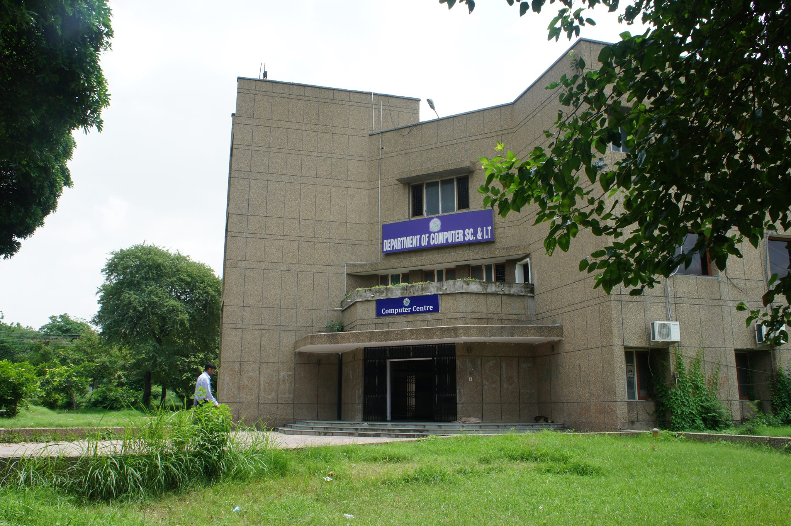

For the first time in the history of Jammu and Kashmir, higher education has been taken to the doorsteps of the disadvantaged and hitherto excluded section of the society living
in the remote hilly area of the state by establishing offsite Campuses at Bhaderwah, Kathua, Udhmpur and Poonch. The Bhaderwah Campus aims at catering to the people living in the
predominantly hilly areas of the erstwhile district of Doda suburb of the town. The foundation stone for the Campus was laid by the, Jenab Ghulam Nabi Azad, then Chief Minister
in March, 2006, at Sungli, 2.5 k.m. away from Bhaderwah town & the new Campus at Sungli was formally inaugurated by Her Excellency Smt. Pratibha Devi Singh Patil, Then the
President of the Republic of India, on 26th. of May, 2008. An area of more than 400 Kanals has been procured in the first phase for the construction of the state of art,
University Campus. The first phase of the construction of the campus is complete. A cluster of 13 prefabricated huts has also been erected where 8 huts which will be used
as classrooms for the different courses. The academic programmes of the Campus started on 1st of Sep. 2006.The academic programmes offered in the Campus includes Masters of
Computer Applications, Masters of Business Administration, Masters in English, Masters in Geography, and undergraduate courses BBA, B Com. Hons., & BCA Data Science.
About The Department of Computer Science and IT

The department of Computer Science & IT of the Bhaderwah Campus is a major learning centre and has a rich infrastructure in terms of 03 computer labs
(including specilized drone lab., IoT lab.) equipped with latest computer systems, workstation, auditorium, smart lecture halls and all other amenities which are essential
for technology oriented courses. Till date the department has produced 14 batches of MCA and placed in various Govt. & Private sectors. The alumni of the department have
excelled in different spheres of society. While most of the students are applying their learned skills in jobs of corporate & govt. sector, many students are perusing higher
research degrees like Ph.D and Post-doc. The department is also offering Ph.D. program to the students and is also hosting conferences, workshops, summer schools and faculty
develment programs from time to time. The Dept regularly organised workshops. IT tours, faculty development programes, conferences, tech fest, etc.